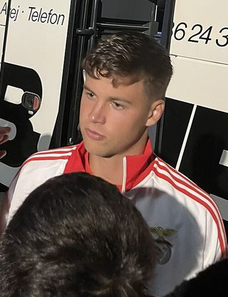

Ezzcoins › Player pages › Samuel Dahl

75
LB

Dahl
PAC83
SHO52
PAS68
DRI76
DEF68
PHY70
Samuel Dahl
75 LB · SL Benfica · Liga Portugal ·  Sweden
Sweden
4,900Recent console price
77Meta rating · LB +2 vs overall
LB77LM73
PAC83
SHO52
PAS68
DRI76
DEF68
PHY70
Chemistry style
Turn on JavaScript to see this card with each chemistry style.
- Position
- LB (also LM)
- Club
- SL Benfica
- League
- Liga Portugal
- Nation
- Sweden
- Skill moves
- 3★
- Weak foot
- 3★
- Preferred foot
- Left
- Height
- 174 cm
- Age
- 23
Meta rating: Ezzcoins' own estimate of how well this card plays in game, worked out from its stats for each position it can play, its skill moves, weak foot and PlayStyle+. An average card scores about its overall rating; higher means it plays above its rating.
Watch on EzzcoinsSamuel Dahl's special cards
More from SL Benfica
- 82
 PalhinhaCDM
PalhinhaCDM - 82
 Vangelis PavlidisST
Vangelis PavlidisST - 81
 Fredrik AursnesCM
Fredrik AursnesCM - 80
 Anatoliy TrubinGK
Anatoliy TrubinGK - 80Andreas SchjelderupLW
- 80
 Dodi LukébakioRW
Dodi LukébakioRW - 80RafaCAM
- 79
 Caroline MøllerCAM
Caroline MøllerCAM